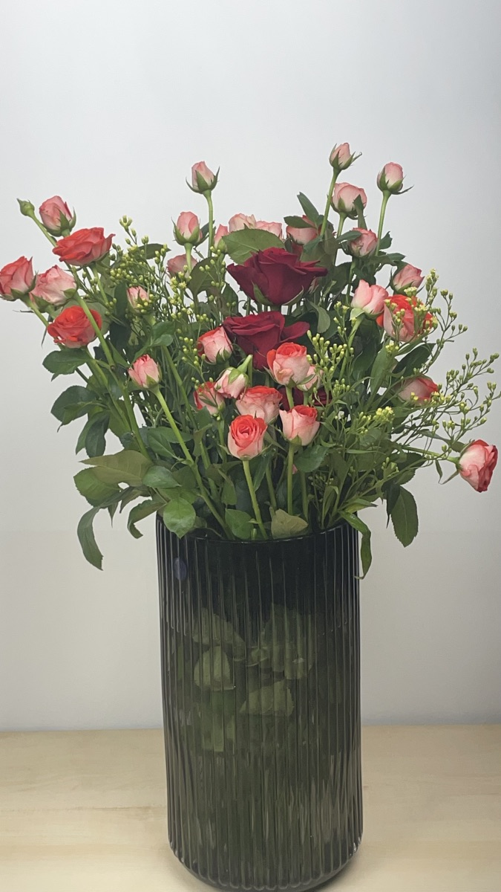
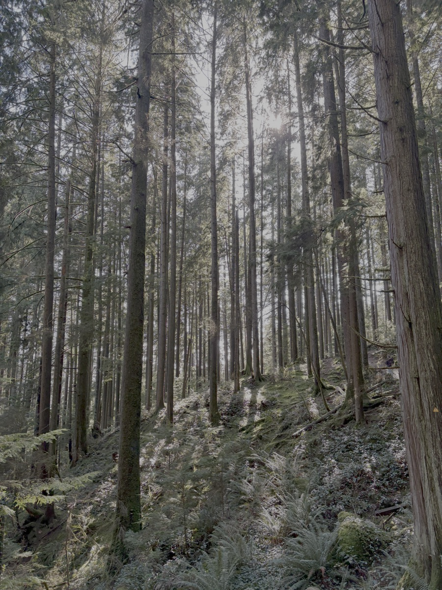
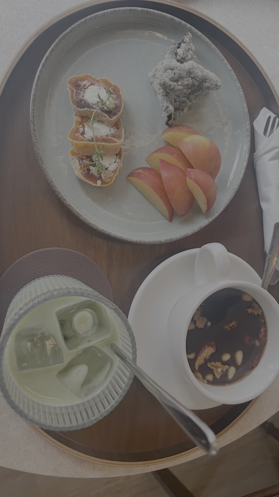
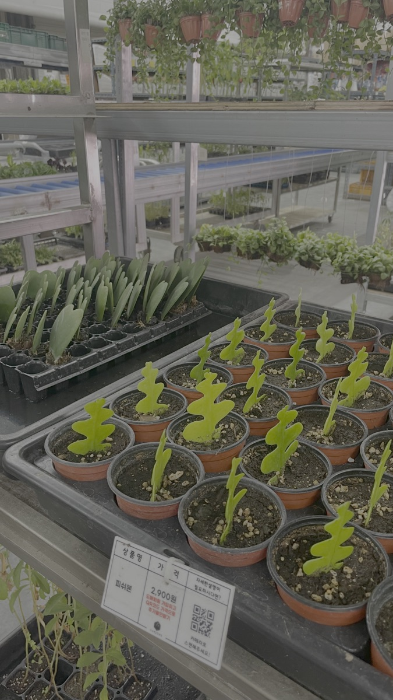
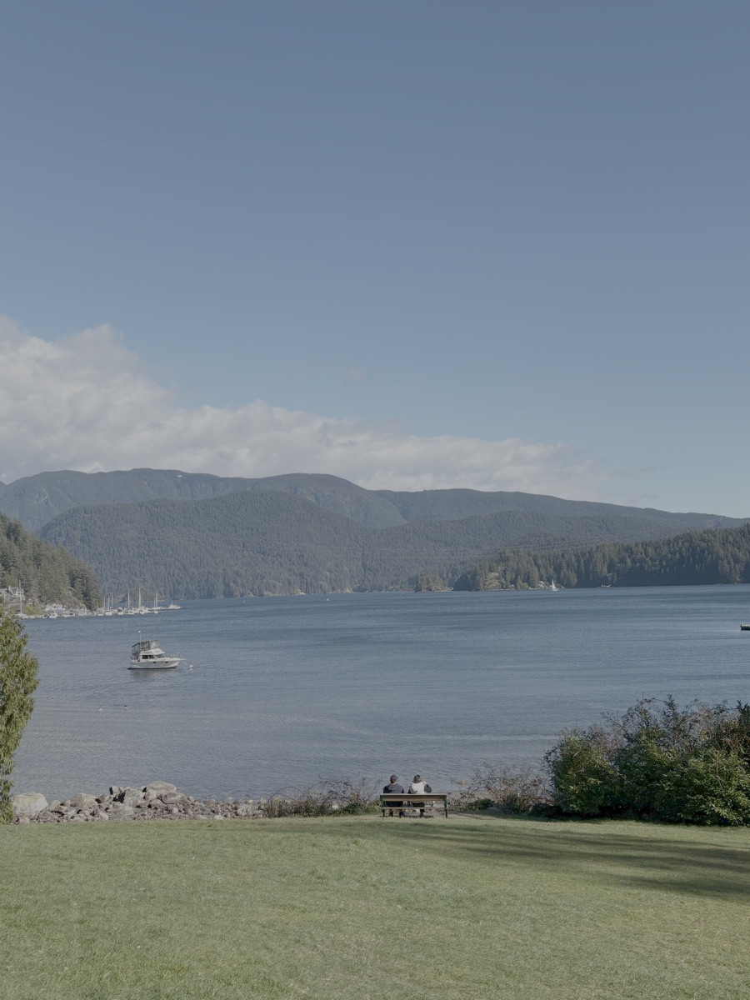
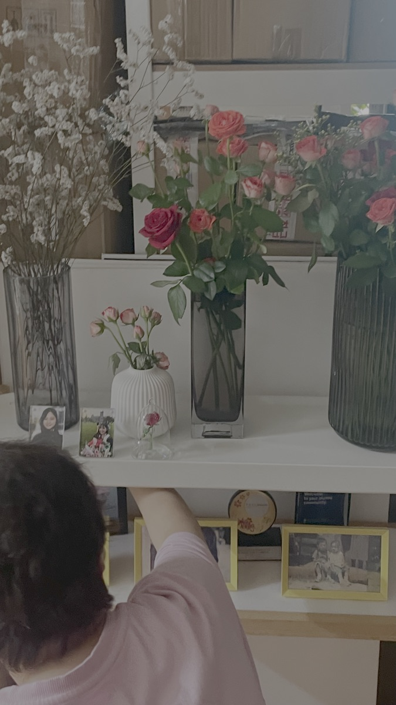

Creative engineer who is seeking the key to the world's bottleneck.






Software engineer at Microsoft, I don't wait to be handed problems — I find them.
Built an AI agent that generates ~70 test scenarios and runs them locally. No pipeline, no wait. What used to take 5 minutes per scenario now takes 1 second for all 70.
My goal is simple: to continuously grow in value — professionally, mentally, and financially. Value that I can stand behind, and that others recognize too.
Consistency over intensity. The tortoise always wins.
The life I'm working toward: career · health · family · creativity · financial stability. Not glamorous, but it's mine.
I've learned that loneliness isn't solved by more social plans — it's solved by purpose and people who matter. Family grounds me. Creative work sustains me. Health enables everything else.
On money: it doesn't buy happiness, but it prevents a lot of unhappiness. I've felt that firsthand. So I'm not waiting for luck — I'm building slowly and deliberately.
On engineering: I believe great software isn't just functional — it's intentional. I hold myself to a standard of clarity, reliability, and craft. Engineering excellence, to me, means building things worth building, and building them well.
And lastly — I'm still figuring out what I can contribute to the world. But I'm looking. Because we only get one world, and I'd like to leave a positive mark on it.